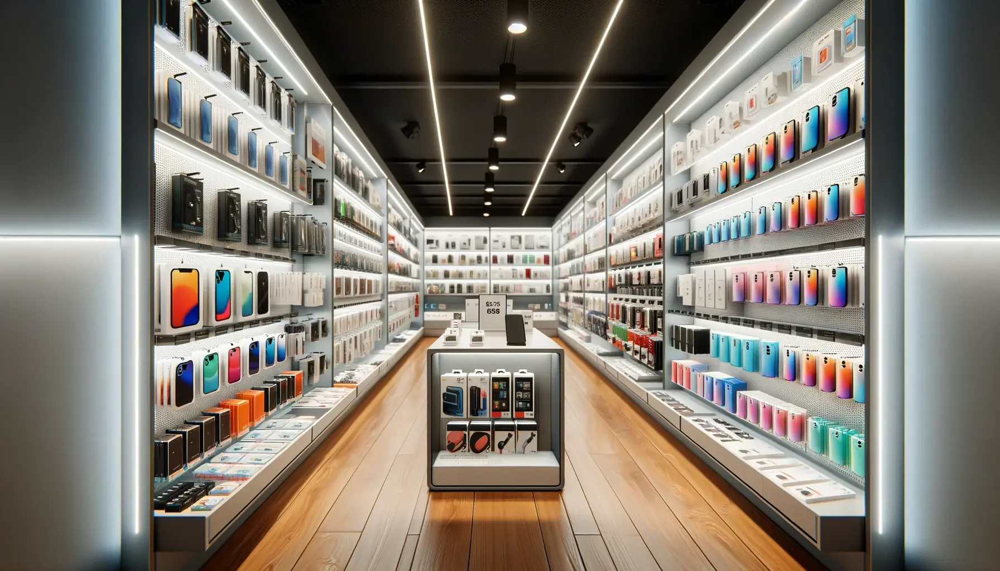

Manhiça Cell Tech MZ
Nossa História
A Manhiça Cell Tech foi fundada em 2021 pelo Sr. Fernando Nelson.
Começou vendendo telefones na rua e hoje temos loja física para servir melhor a comunidade.
Missão
Trazer tecnologia de qualidade com preço justo para todos na Manhiça.
Visão
Ser a loja de celulares mais confiável da região até 2027.
Valores
- Honestidade com o cliente
- Garantia em todos os produtos
- Preços acessíveis
- Atendimento em Português e Changana
Principais Serviços
- Venda de celulares novos - Samsung, Tecno, Infinix, iPhone
- Revenda de celulares usados com garantia de 3 meses
- Reparação de telas e troca de bateria
- Venda de acessórios: capas, películas, carregadores, fones
- Desbloqueio e instalação de aplicativos

VENHA GARANTIR O SEU CELULAR DE ALTA QUALIDADE NO CELL TECH MZ